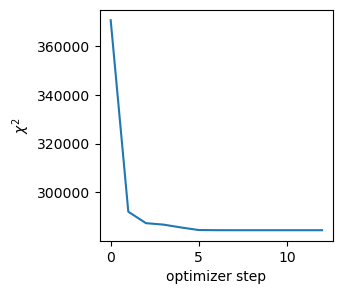
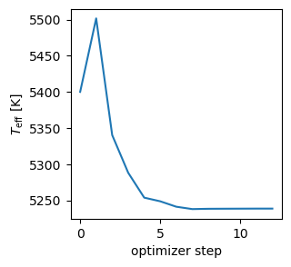

Download this page as a Jupyter notebook
In this example, we'll show how to use Korg.Fit.fit_spectrum to fit one of the spectra from Griffith et al. 2022. You will probably find it helpful to look at the documentation for this function as well. For fitting equivalent widths (rather than spectra directly) see the documentation for Korg.Fit.ews_to_abundances.
A quick disclaimer: this example is intended to demonstrate the usage of Korg's fitting functionality, not to be an ironclad spectral analysis.
We'll use a few packages in addition to Korg in this example. If you don't have them installed, you can run using Pkg; Pkg.add(["CSV", "DataFrames", "PyPlot"]) to install them.
using Korg, PythonPlot, CSV, DataFramesReading in the data
First, we need to read in the linelist, "window list" (the locations of lines to be fit), and spectrum. You can download the data files from Korg's GitHub repository at https://github.com/ajwheeler/Korg.jl/tree/v1.0.0/docs/src/assets/Griffith_2022.
Linelist
As in the Equivalent Widths Example, we want to reproduce the results of a specific paper, so we'll use the linelist from that paper.
linetable = CSV.read("../../assets/Griffith_2022/lines.csv", DataFrame);
linelist = Korg.Line.(Korg.air_to_vacuum.(linetable.wave_A),
linetable.loggf,
Korg.Species.(linetable.element),
linetable.lower_state_eV,
linetable.rad,
linetable.stark,
linetable.waals)140292-element Vector{Korg.Line{Float64, Float64, Float64, Float64, Float64, Float64}}:
Ti I 4201.202404 Å (log gf = -2.49, χ = 1.88 eV)
Nd II 4201.205404 Å (log gf = -1.64, χ = 0.06 eV)
W I 4201.211406 Å (log gf = -0.99, χ = 2.04 eV)
U II 4201.269421 Å (log gf = -1.47, χ = 0.78 eV)
Fe I 4201.270421 Å (log gf = -1.13, χ = 3.88 eV)
Cr I 4201.284425 Å (log gf = -1.03, χ = 3.08 eV)
Co I 4201.285425 Å (log gf = -1.01, χ = 4.07 eV)
Fe II 4201.344441 Å (log gf = -3.65, χ = 7.73 eV)
Cr I 4201.352443 Å (log gf = -0.86, χ = 3.84 eV)
V I 4201.361445 Å (log gf = -2.29, χ = 0.28 eV)
⋮
Fe I 9202.415925 Å (log gf = -6.33, χ = 5.38 eV)
Mn I 9202.415925 Å (log gf = -5.62, χ = 4.35 eV)
Fe II 9202.421927 Å (log gf = -2.72, χ = 12.76 eV)
Mn II 9202.425928 Å (log gf = -1.66, χ = 13.44 eV)
Mn II 9202.425928 Å (log gf = -0.71, χ = 13.44 eV)
Mn II 9202.425928 Å (log gf = -0.25, χ = 13.44 eV)
Mn II 9202.510951 Å (log gf = -1.62, χ = 13.44 eV)
Mn II 9202.510951 Å (log gf = -0.73, χ = 13.44 eV)
Mn II 9202.510951 Å (log gf = -0.4, χ = 13.44 eV)Next, we'll read in the "window list", which provides wavelength ranges for features to be fit. We'll read this into a dictionary that maps atomic number to a vector of (lower, upper) wavelength bounds.
windowtable = CSV.File("../../assets/Griffith_2022/windows.tsv"; delim='\t');
windows = Dict()
for row in windowtable
#atomic number
Z = Korg.get_atoms(Korg.Species(row.species))[1]
#get the windows for this element so far
wins = get(windows, Z, [])
#add the new window
push!(wins, (Korg.air_to_vacuum(row.wave_base * 10), Korg.air_to_vacuum(row.wave_top * 10)))
#update the dictionary
windows[Z] = wins
endFinally, read in the observed spectrum.
spec = CSV.read("../../assets/Griffith_2022/2MASS_J03443498+0553014.csv", DataFrame)
spec.waveobs = Korg.air_to_vacuum.(spec.waveobs * 10)27969-element Vector{Float64}:
4222.237789574116
4222.277860033124
4222.317919782653
4222.357968822494
4222.398007152436
4222.438034772281
4222.47805168182
4222.518057880852
4222.558053369179
4222.598038146595
⋮
6318.009557531354
6318.068451939513
6318.127329935025
6318.186191521686
6318.245036703283
6318.3038654835955
6318.362677866404
6318.421473855483
6318.480253454593Fitting iron lines to get stellar parameters
First, we'll provide an initial guess for each parameter we want to fit.
this is a "NamedTuple", but you can also use a dictionary if you prefer
initial_guess = (; Teff=5400, logg=3.8, M_H=-1.1, vmic=1.0)(Teff = 5400, logg = 3.8, M_H = -1.1, vmic = 1.0)Next, we'll fit the spectrum using only the iron line locations from windows. The object produced, fit_result, contains several bits of information, most importantly the best-fit parameters.
winds = windows[26] # use Fe windows
fit_result = Korg.Fit.fit_spectrum(spec.waveobs, spec.flux, spec.err, linelist, initial_guess;
windows=winds, R=50_000)
fit_result.best_fit_paramsDict{String, Float64} with 4 entries:
"M_H" => -1.39496
"Teff" => 5238.59
"logg" => 3.652
"vmic" => 0.804352It also contains the trace, which we can plot to see how the fit converged. Here's the $\chi^2$ as a function of the optimizer step.
plot([t["chi2"] for t in fit_result.trace])
ylabel(L"χ^2")
xlabel("optimizer step")
Here's the temperature as a function of the optimizer step.
plot([t["Teff"] for t in fit_result.trace])
ylabel(L"$T_\mathrm{eff}$ [K]")
xlabel("optimizer step")
The fit_result object also contains the best-fit spectrum, which we can plot in comparison to the observed one. Let's look at one of the iron lines.
get the observed spectrum only at the wavelengths within a fitting window
obs_wls = spec.waveobs[fit_result.obs_wl_mask]
obs_flux = spec.flux[fit_result.obs_wl_mask]
obs_err = spec.err[fit_result.obs_wl_mask]
w = rand(winds) # choose a window around a random Fe line(4742.555174809838, 4743.155333774689)create a bitmask to plot the window plus 1 Å on each side for context
mask = w[1] - 1 .< obs_wls .< w[2] + 1
scatter(obs_wls[mask], fit_result.best_fit_flux[mask]; c="r", label="Korg")
errorbar(obs_wls[mask], obs_flux[mask]; yerr=obs_err[mask], ls="", c="k", label="data")
legend()![Example block output]()
Fit individual abundances
Now, let's fit for the sodium abundance, holding the stellar parameters fixed. We'll use the stellar parameters from Griffith, rather than the ones from the analysis above. Comparing the abundances you get using each is left as an exercise to the reader.
First, we'll define the initial guess for the Na abundance and the parameters to hold fixed.
init_params = (; Na=-1.0)
griffith_params = (Teff=5456, logg=3.86, M_H=-1.22, vsini=2.4, vmic=1.23)(Teff = 5456, logg = 3.86, M_H = -1.22, vsini = 2.4, vmic = 1.23)Next, we'll fit the sodium lines. The only difference from how we called fit_spectrum the first time is that we pass in a second set of parameters to hold fixed. Korg.Fit.fit_spectrum supports any combination of parameters to fit and hold fixed.
winds = windows[11] # windows for Na (atomic number 11)
na_result = Korg.Fit.fit_spectrum(spec.waveobs, spec.flux, spec.err, linelist,
init_params, griffith_params;
R=50_000, windows=winds) # 11 is the atomic number of Na
na_result.best_fit_params["Na"]-1.0927979511142887Parameter uncertainty
Under the hood, Korg.Fit.fit_spectrum uses LBFGS to find the best-fit parameters. That means it produces an estimate of the Hessian of the likelihood function, and thus the covariance matrix of the best-fit parameters.
fit_result.covariance(["M_H", "Teff", "logg", "vmic"], [4.893993284121512e-6 0.00592010771282343 9.316413822759092e-6 2.4333691978577283e-6; 0.005920107712528997 8.32512738762558 0.012402415342503791 0.007420150688732076; 9.316413822697213e-6 0.01240241534220908 2.8117321051592086e-5 5.070182781660349e-6; 2.43336919787088e-6 0.007420150688699804 5.070182781660351e-6 2.582542797927591e-5])We caution the user that this is a very rough estimate, likely appropriate only for identifying pathological cases or the order of magnitude of the uncertainties.